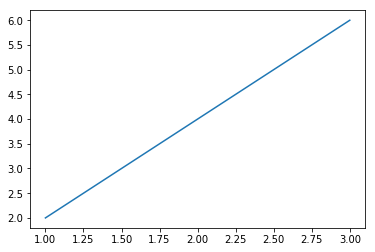
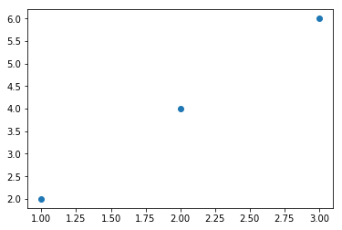
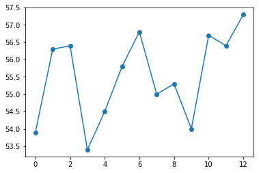
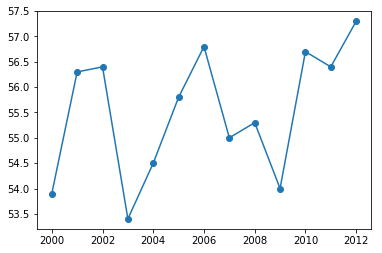
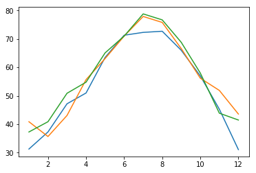
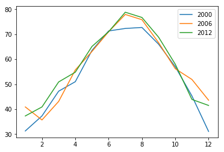
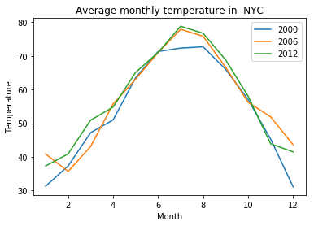
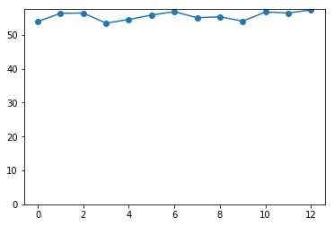
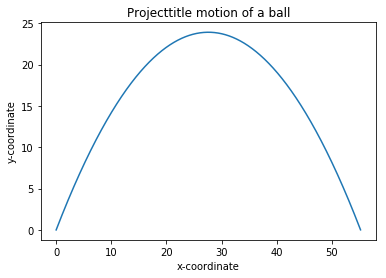

データをグラフで視覚化する¶
デカルト座標平面を理解する¶
リストとタプルの操作¶
In [10]:
import unittest
class TestListTuple(unittest.TestCase):
def test_01(self):
simplelist = [1,2,3]
self.assertEqual(simplelist[0],1)
self.assertEqual(simplelist[1],2)
self.assertEqual(simplelist[2],3)
def test_02(self):
stringList = ['a string', 'b string', 'c string']
self.assertEqual(stringList[0], 'a string')
self.assertEqual(stringList[1], 'b string')
if __name__ == '__main__':
unittest.main(argv=['first-arg-is-ignored'], exit=False)
..
----------------------------------------------------------------------
Ran 2 tests in 0.001s
OK
リストやタプルで繰り返す¶
In [1]:
import unittest
class TestForin(unittest.TestCase):
def test_01(self):
l = [1, 2, 3]
for item in l:
print(item)
self.assertIn(item, [1, 2, 3])
if __name__ == '__main__':
unittest.main(argv=['first-arg-is-ignored'], exit=False)
.
1
2
3
----------------------------------------------------------------------
Ran 1 test in 0.001s
OK
matplotlibでグラフを作る¶
In [7]:
import matplotlib.pyplot as plt
x_numbers = [1, 2, 3]
y_numbers = [2, 4, 6]
plt.plot(x_numbers, y_numbers)
plt.show()

グラフで点を作る¶
In [8]:
import matplotlib.pyplot as plt
x_numbers = [1, 2, 3]
y_numbers = [2, 4, 6]
plt.plot(x_numbers, y_numbers, 'o')
plt.show()

ニューヨーク市の年間平均気温をグラフ化する¶
In [10]:
import matplotlib.pyplot as plt
nyc_temp = [53.9, 56.3, 56.4, 53.4, 54.5, 55.8, 56.8, 55.0, 55.3, 54.0, 56.7, 56.4, 57.3]
plt.plot(nyc_temp, marker='o')
plt.show()

In [12]:
import matplotlib.pyplot as plt
nyc_temp = [53.9, 56.3, 56.4, 53.4, 54.5, 55.8, 56.8, 55.0, 55.3, 54.0, 56.7, 56.4, 57.3]
years = range(2000, 2013)
plt.plot(years,nyc_temp, marker='o')
plt.show()

ニューヨーク市の月間気温傾向を比較する¶
In [13]:
import matplotlib.pyplot as plt
nyc_temp_2000 = [31.3, 37.3, 47.2, 51.0, 63.5, 71.3, 72.3, 72.7, 66.0, 57.0, 45.3, 31.1]
nyc_temp_2006 = [40.9, 35.7, 43.1, 55.7, 63.1, 71.0, 77.9, 75.8, 66.6, 56.2, 51.9, 43.6]
nyc_temp_2012 = [37.3, 40.9, 50.9, 54.8, 65.1, 71.0, 78.8, 76.7, 68.8, 58.0, 43.9, 41.5]
months = range(1, 13)
plt.plot(months, nyc_temp_2000, months, nyc_temp_2006, months, nyc_temp_2012)
plt.show()

In [16]:
import matplotlib.pyplot as plt
nyc_temp_2000 = [31.3, 37.3, 47.2, 51.0, 63.5, 71.3, 72.3, 72.7, 66.0, 57.0, 45.3, 31.1]
nyc_temp_2006 = [40.9, 35.7, 43.1, 55.7, 63.1, 71.0, 77.9, 75.8, 66.6, 56.2, 51.9, 43.6]
nyc_temp_2012 = [37.3, 40.9, 50.9, 54.8, 65.1, 71.0, 78.8, 76.7, 68.8, 58.0, 43.9, 41.5]
months = range(1, 13)
plt.plot(months, nyc_temp_2000, months, nyc_temp_2006, months, nyc_temp_2012)
plt.legend([2000, 2006, 2012])
plt.show()

グラフのカスタマイズ¶
題名と説明ラベルを追加する¶
In [17]:
import matplotlib.pyplot as plt
nyc_temp_2000 = [31.3, 37.3, 47.2, 51.0, 63.5, 71.3, 72.3, 72.7, 66.0, 57.0, 45.3, 31.1]
nyc_temp_2006 = [40.9, 35.7, 43.1, 55.7, 63.1, 71.0, 77.9, 75.8, 66.6, 56.2, 51.9, 43.6]
nyc_temp_2012 = [37.3, 40.9, 50.9, 54.8, 65.1, 71.0, 78.8, 76.7, 68.8, 58.0, 43.9, 41.5]
months = range(1, 13)
plt.plot(months, nyc_temp_2000, months, nyc_temp_2006, months, nyc_temp_2012)
plt.title('Average monthly temperature in NYC')
plt.xlabel('Month')
plt.ylabel('Temperature')
plt.legend([2000, 2006, 2012])
plt.show()

軸のカスタマイズ¶
In [18]:
import matplotlib.pyplot as plt
nyc_temp = [53.9, 56.3, 56.4, 53.4, 54.5, 55.8, 56.8, 55.0, 55.3, 54.0, 56.7, 56.4, 57.3]
plt.plot(nyc_temp, marker='o')
plt.axis(ymin=0)
plt.show()

pyplotを使ってプロットする¶
In [21]:
import matplotlib.pyplot as plt
"""
pyplotを使った簡単なプロット
"""
def create_graph():
x_numbers = [1, 2, 3]
y_numbers = [2, 4, 6]
plt.plot(x_numbers, y_numbers)
plt.show()
create_graph()
プロットの保存¶
In [22]:
import matplotlib.pyplot as plt
x = [1, 2, 3]
y = [2, 4, 6]
plt.plot(x,y)
plt.savefig('mygraph.png')

式をプロットする¶
ニュートンの万有引力の法則¶
\(F = {Gm_1m_2 \over r^2}\)
In [ ]:
'''
2物体間の万有引力と距離の関係
'''
import matplotlib.pyplot as plt
# グラフを描く
def draw_graph(x, y):
plt.plot(x, y, marker='o')
plt.xlabel('Distance in meters')
plt.ylabel('Gravitational force in newtons')
plt.title('Gravitational force and distace')
plt.show()
def generate_f_r():
# generate value for r
r = range(100, 1001, 50)
# Fの計算値を格納数する空リスト
F = []
# 定数G
G = 6.674*(10**-11)
# two masses
m1 = 0.5
m2 = 1.5
# 引力を計算しリストFに加える
for dist in r:
force = G*(m1*m2)/(dist**2)
F.append(force)
# draw_graph関数呼び出し
draw_graph(r, F)
generate_f_r()
投射運動¶
\(u_y=u\sin\theta-gt\)
\(S_y=u(\sin\theta)t - {1 \over2}gt^2\)
\(t={u \sin\theta \over g}\)
\(t_{fly} = 2t_{fly} = 2{u\sin\theta \over g}\)
In [31]:
from matplotlib import pyplot as plt
import math
'''
２つの値の間の等間隔な浮動小数点数の生成
'''
def frange(start, final, increment):
numbers = []
while start < final:
numbers.append(start)
start = start + increment
return numbers
'''
投射運動物体の軌跡を描く
'''
def draw_trajectory_graph(x, y):
plt.plot(x, y)
plt.xlabel('x-coordinate')
plt.ylabel('y-coordinate')
plt.title('Projecttitle motion of a ball')
def draw_trajectory(u, theta):
theta = math.radians(theta)
g = 9.8
# Time of flight
t_flight = 2*u*math.sin(theta)/g
# find time intervals
intervals = frange(0, t_flight, 0.001)
# list of x and y coordinates
x = []
y = []
for t in intervals:
x.append(u*math.cos(theta)*t)
y.append(u*math.sin(theta)*t - 0.5*g*t*t)
draw_trajectory_graph(x, y)
initial_velocity = 25
angle_of_projection = 60
draw_trajectory(initial_velocity, angle_of_projection)
plt.show()
